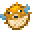

スクアッド「Squads」
スクアッドは、BowyersMCの3番目のゲームです。
2から3人ずつのチームに分かれて、敵チームを全滅させるのが目標のゲームです。
「連携」が求められる唯一のゲームモードです。
フェーズ
エントリー

エントリーのフェーズです。
エントリールームにて好きなウェポンをセレクターを利用して選択できます。
選べるウェポンは、サプライウェポン以外の開放済みのウェポンに限ります。
また、エントリー時に設定されているウェポンは「お気に入りのウェポン」が設定されます。よく使うウェポンは、お気に入りに設定しておくことをお勧めします。
プリパレ―ション

戦闘準備のフェーズです。
それぞれのチームプレイヤーが透明化つきの状態で任意の座標にスポーンします。
この時ウェポンは移動系のものとパラレルのみ利用できます。
この瞬間から、プレイヤーにはチームの属性を示すエフェクトが付与されます。
透明化が10秒後に消えるので、それまでに臨戦態勢を整えましょう。
メインプレイ

メインフェーズです。
アリーナはバリアブロックで周りがふさがれていないため、落下の危険性があるので注意が必要です。
ノックバックを発生させるウェポンには特に注意しましょう。
味方へのウェポンの効果をよく理解して、ウェポンを効果的に扱おう。
エンド

ゲーム終了のフェーズです。
勝敗結果が表示されます。
終了時には勝者のイミテイトが剥がされ、纏っていたプレイヤーのスキンに戻ります。
勝ち負け判定
・敵チーム全滅
生存していたチームが勝ちになります。
・複数生存で時間切れ
人数が多いチームが勝利になります。
同じだった場合は、引き分けになります。
・相撃ちによる全滅
全員が敗者の判定になります。
ウェポンの味方への効果
 ヘイズ ❝Haze❞
ヘイズ ❝Haze❞
中に入ってもデバフを一切喰らいません。
使用者が見えなくても、常にマグマキューブが表示されます。
 ショックウェーバー ❝ShockWaver❞
ショックウェーバー ❝ShockWaver❞
ノックバックは受けますが、その際にデバフは受けません。
 スワッパー ❝Swapper❞
スワッパー ❝Swapper❞
味方にもスワップ対象としての判定が吸われます。
 ヴァニッシャー ❝Vanisher❞
ヴァニッシャー ❝Vanisher❞
透明中に、味方が使用者を視認することはできません。
 トラッパー ❝Trapper❞
トラッパー ❝Trapper❞
展開はできませんが、設置位置が常に表示されます。
味方でさえも罠にはかかります。
スピアー ❝Spear❞
フグに当たったり触れると、味方でさえ鎧が剥がれます。
味方は身を挺して触れたとしても、そのフグを使用者へ回収することができません。
 イエティ ❝Yeti❞
イエティ ❝Yeti❞
味方にあたった雪玉は消滅します。
 ツインズ ❝Twins❞
ツインズ ❝Twins❞
味方はネームタグにより、偽物かどうかの判断ができます。
双子を消滅させても、味方はデバフを食らいません。
 ライダー ❝Rider❞
ライダー ❝Rider❞
味方は衝突デバフを食らいません。